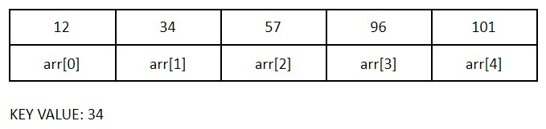

| SEARCHING & SORTING |
SEARCHING
Why do we need searching algorithms? Well, searching is useful if you need to determine if a certain element is, or is not, in a set of data. It's also useful to search for certain information to determine the output for another. There are 2 common ways to search for a value; sequential and binary search.
SEQUENTIAL SEARCH
A sequential search is a very common way to search for specific values in a set of data, usually an array or array list. Essentially, you traverse a set of data and compare each value to your "key" value, or the value you wish to find. To do this, you use a simple for loop and if statement. See the example method below on how to do this.
public boolean foundKey(String [] arr, String key){
for (int i = 0; i < arr.length; i++){ // Traverses the array
if (arr[a].equals(key)){ // Tests if any of the elements are equal to the value we are looking for
return true; // If we found the value, return true
}
}
return false; // If we don't find the value, return false
}
How would searching apply to your code? Well, consider this code snippet I (Lily Phan) wrote:
int countVows = 0; //variable to count number of vowels
int countCons = 0; //variable to count number of consonants
for (int i = 0 ; i < sentence.length () ; i++) {
char letter = sentence.charAt (i);
if (letter == 'a' || letter == 'e' || letter == 'i' || letter == 'o' || letter == 'u'){
countVows++;
} else if (letter >= 'a' && letter <= 'z'){
countCons++;
}
}
This code is meant to count the number of vowels and consonants in a sentence. Now, this doesn't seem like the sorting method I had above, right? But this is still considered searching, since I'm going through a set of data (in this case, a String, or a set of chars) to search for vowels and consonants.
To start, I declared 2 variables to hold the number of vowels and consonants. Later on in the program, I would output these numbers to the user. Then, I created a for loop to iterate through every char in the String . Assume that is a given String by the user. Next, I created a char called to hold each char in the String. I could skip this step, and write to replace every letter in the program, but to increase readability I created a separate variable.
Next, I have my if statements. The first part checks if is a vowel, and if it is, the program increments by 1. Otherwise, the second part checks if is actually a letter and not another special character. If it is, then increments by 1. This repeats until the for loop reaches the end of the given String.
It's a rather simple program, but completes the problem presented. It successfully checks each character in a String and counts the vowels and consonants. A common mistake when writing this code, however, would be to not check for upper case letters. Notably, though not written explicitly above, the program also used on to ensure all the letters are lowercase. This way, I don't need to add additional conditions such as in my if statement.
BINARY SEARCH
Binary search is much more efficient than sequential search, however, all the elements must be in order for binary search to work. This is because binary search uses a "divide and conquer" algorithm to find the key value.
Say we have a set of data ordered least to greatest. The algorithm starts by checking the middle of the set of data to determine if that value is greater or less than the value we are searching for. If it's greater than, then the algorithm checks the center of that set of data (from the middle of the original data to the end) and compares that new value to the key. If it's less than, the same applies but now the algorithm works with all the numbers less than the value at the center. This repeats until we have found the value we are looking for.
Take a look at the diagrams below, which show a visual example of how this algorithm works.
Step 1: We find the middle of the array by the formula (arr.length/2). The middle index is at arr[2].
Step 2: We compare the value at arr[2] to 34. 57 is greater than 34, thus, we're going to look at the elements to the left of arr[2].
Step 3: To find the new middle value, we take the indices of the previous middle array and the other end of the area we will search and divide that by 2 to find the middle value. (2 + 0)/2 = 1, so that is our new middle value.
Step 4: We compare the value at arr[1] to 34. 34 is equal to arr[1], thus, we've found our key value in the index and we can return its index.
SELECTION SORT
Sorting in coding is essentially the systematic arrangement of data. There are many different algorithms that sort, with some more efficient than others. But this tutorial is going to focus on selection sorting!
Selection sorting is a comparison-based sorting algorithm. It is used to organize a set of data from highest to lowest, or vise versa. Note that this isn't the fastest sorting algorithm there is. If anything, it is amongst the slower sorting algorithms. Its worst time complexity (how efficient it is) is O(n2), and its best is the exact same! Take a look at the chart below if you'd like to compare it with other sorting algorithm complexities.

Despite its slowness, it's a very basic and easy-to-understand sorting algorithm (and can be fast for short amounts of data) which is usually why it's used.
So how exactly does this algorithm work? It essentially searches through the unsorted part of an array for the greatest value, then swaps that greatest value with the last element of the unsorted part, and then shortens the area that is unsorted. This repeats until there are no parts left to sort. See below for the code example on how this sorting algorithm can be written.
/** Variable declarations. */
int [] arr = {3, 7, 3, 56, 23, 45, 78, 0, 234, -45};
int unsorted = arr.length;
/** Runs until there is only 1 number left to sort. */
while (unsorted > 1) {
int maxPos = 0;
/** Looks for the greatest value in the array. */
for (int i = 1; i < unsorted; i++){
if (arr [i] > arr [maxPos]){
maxPos = i;
}
}
/** Swaps the value at arr[maxPos] with the value at arr [unsorted - 1]. */
int temp = arr [maxPos];
arr [maxPos] = arr [unsorted - 1];
arr [unsorted - 1] = temp;
unsorted--;
}
If you want a run-through on how this code works, watch the video below to see my partner, Nancy Zhu, and I explain the basics about selection sort.
BIBLIOGRAPHY
https://courses.cs.vt.edu/~csonline/Algorithms/Lessons/SelectionSort/index.html
https://www.toptal.com/developers/sorting-algorithms/selection-sort
https://www.youtube.com/watch?v=3hH8kTHFw2A
https://bit.ly/2P09kHa
https://www.geeksforgeeks.org/searching-algorithms/
ICS4U0 Course Information, taught by Krasteva V.
Complexity Chart Graphic: https://www.hackerearth.com/practice/notes/big-o-cheatsheet-series-data-structures-and-algorithms-with-thier-complexities-1/
All code written by Lily Phan (2021).